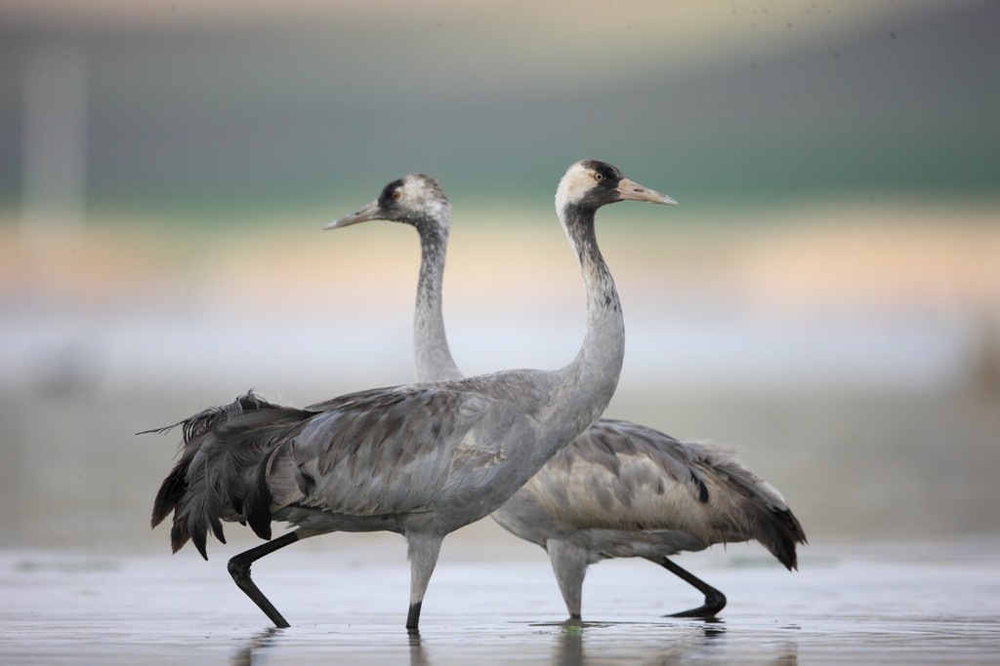

Turna (Grus grus), uzun boynu, zarif duruşu ve melodik ötüşüyle dünyanın en etkileyici kuşlarından biridir. Ortalama 100–120 cm uzunluğa ve 2 metreyi aşan kanat açıklığına sahip olan turnalar, sulak alanlar, bataklıklar ve geniş bozkırlarda yaşar. Uzun bacakları sayesinde sığ sularda rahatça dolaşır, beslenmelerini ise bitkiler, tohumlar, böcekler ve küçük canlılar oluşturur. Göçmen yapılarıyla bilinen turnalar, ilkbahar ve sonbaharda büyük sürüler halinde göç ederek gökyüzünde görkemli manzaralar sergiler. Çiftleşme döneminde yaptıkları dans benzeri hareketler, türün en ayırt edici davranışlarından biridir ve kültürel olarak da sadakat ile zarafetin sembolü hâline gelmiştir. Doğru koşullar altında 20–25 yıl yaşayabilen turna, hem estetik güzelliği hem de sembolik anlamıyla kuş dünyasında özel bir yere sahiptir.